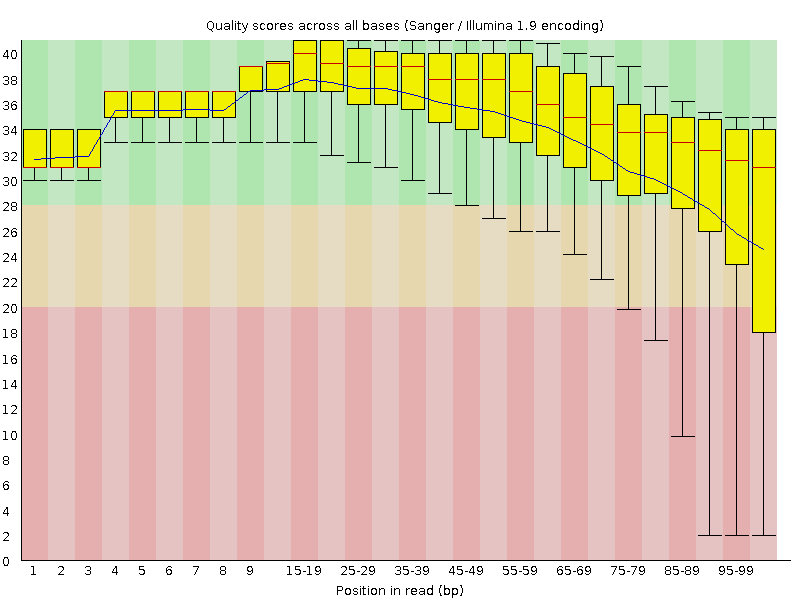
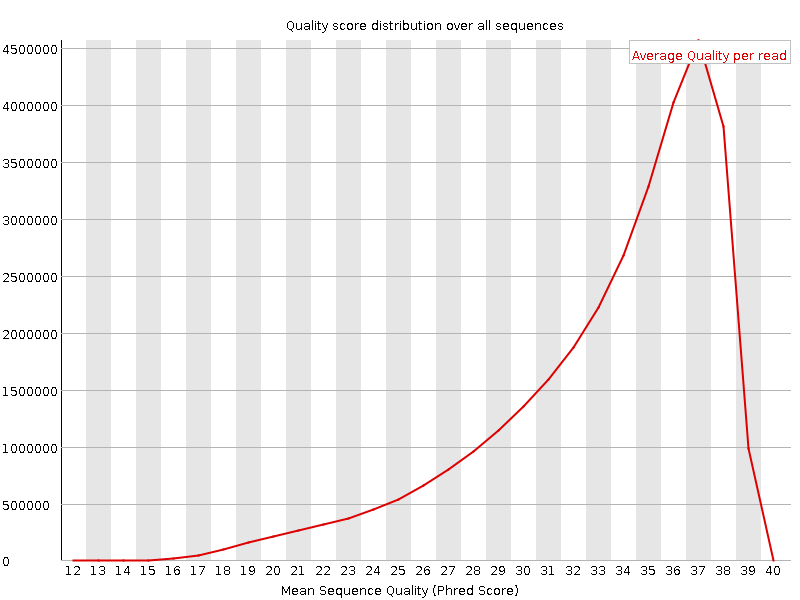
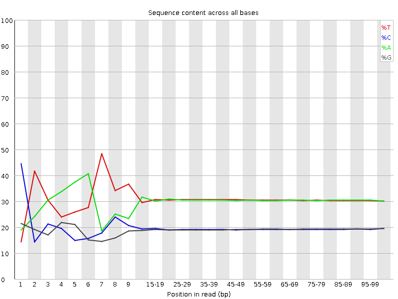
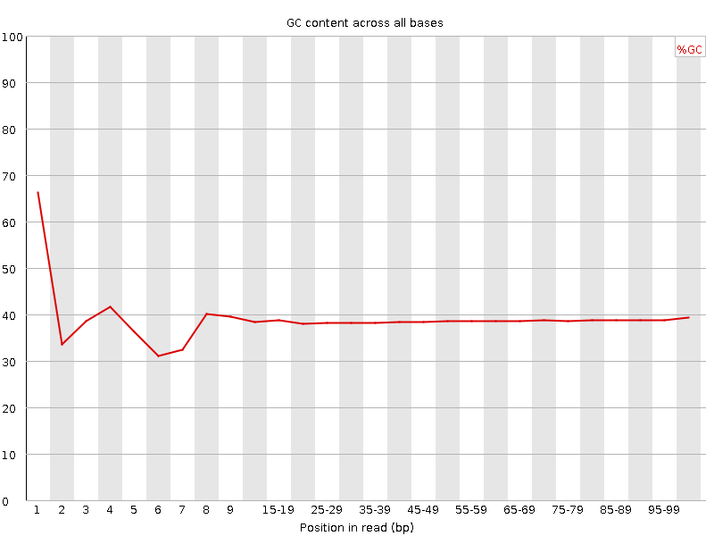
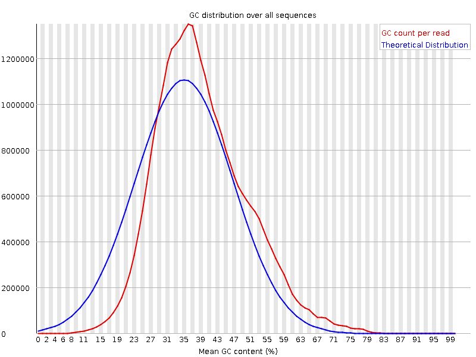
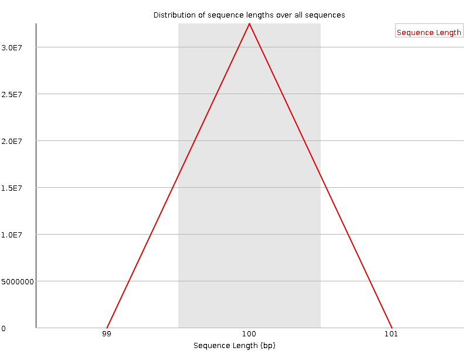
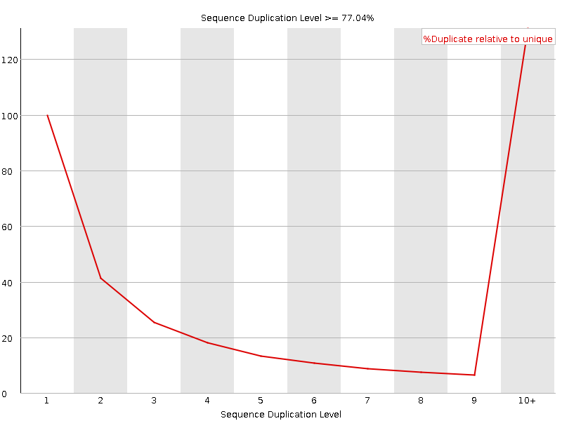
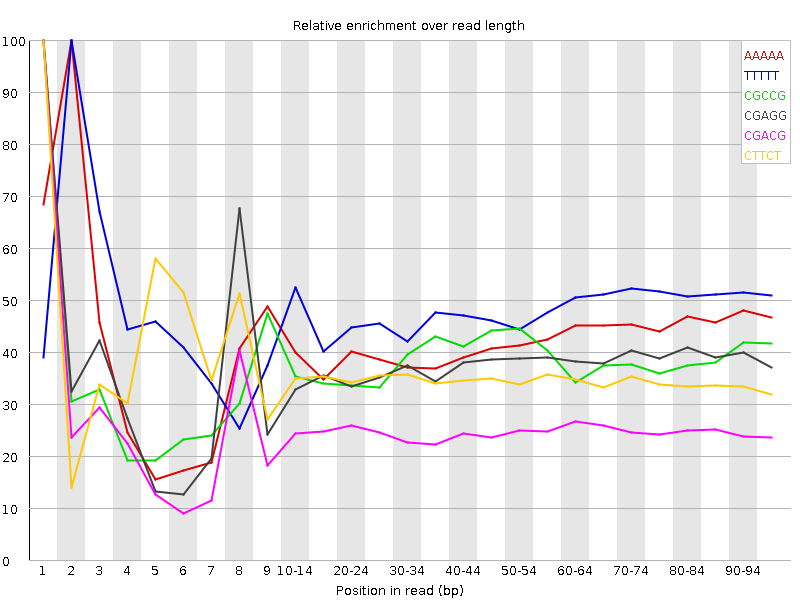

![[OK]](Icons/tick.png) Basic Statistics
Basic Statistics
| Measure | Value |
|---|---|
| Filename | t6.1.fq |
| File type | Conventional base calls |
| Encoding | Sanger / Illumina 1.9 |
| Total Sequences | 32476047 |
| Filtered Sequences | 0 |
| Sequence length | 100 |
| %GC | 38 |
Per base sequence quality

Per sequence quality scores

![[FAIL]](Icons/error.png) Per base sequence content
Per base sequence content

Per base GC content

![[WARN]](Icons/warning.png) Per sequence GC content
Per sequence GC content

Per base N content

Sequence Length Distribution

Sequence Duplication Levels

Overrepresented sequences
No overrepresented sequences
Kmer Content

| Sequence | Count | Obs/Exp Overall | Obs/Exp Max | Max Obs/Exp Position |
|---|---|---|---|---|
| AAAAA | 20129550 | 2.4544766 | 5.829929 | 2 |
| TTTTT | 20694950 | 2.432861 | 5.0404696 | 2 |
| CGCCG | 1710555 | 1.9790486 | 5.156986 | 1 |
| CGAGG | 2542995 | 1.9117287 | 5.0705204 | 1 |
| CGACG | 2573680 | 1.9088774 | 7.5870476 | 1 |
| CTTCT | 6282705 | 1.8236452 | 5.1339817 | 1 |
| CGGCG | 1512095 | 1.7731924 | 5.292326 | 1 |
| CGCGG | 1430185 | 1.677139 | 5.617783 | 1 |
| TCGAG | 3487435 | 1.6461115 | 5.0466948 | 7 |
| CTCGA | 3491715 | 1.6260525 | 8.2340765 | 1 |
| CGAGA | 3377945 | 1.6061277 | 5.5542073 | 1 |
| CTGGA | 3391480 | 1.6008196 | 7.1045613 | 1 |
| CTTTT | 8552040 | 1.579767 | 6.6232214 | 1 |
| CGCGA | 2106250 | 1.5621885 | 5.793565 | 1 |
| CAAAA | 8107825 | 1.5421451 | 5.0536942 | 1 |
| CTCCA | 3353000 | 1.5405366 | 6.3403525 | 1 |
| ATCGA | 4929540 | 1.4716556 | 5.4275036 | 6 |
| CTTCG | 3167415 | 1.4642874 | 6.0635457 | 1 |
| CTCGT | 3167265 | 1.4642181 | 7.4915285 | 1 |
| CGAAG | 3070445 | 1.4599192 | 5.3487325 | 1 |
| CGATC | 3131190 | 1.45816 | 5.0150466 | 4 |
| CGCCA | 1987235 | 1.4541706 | 5.085608 | 1 |
| CCGGC | 1253480 | 1.4502301 | 5.3142014 | 1 |
| CTGGC | 1940970 | 1.4291174 | 5.2344975 | 1 |
| CTTCA | 4822335 | 1.4100206 | 5.414811 | 1 |
| CTCGG | 1845040 | 1.3584852 | 7.6498756 | 1 |
| CTCGC | 1855120 | 1.3476087 | 6.1514854 | 1 |
| CGAAA | 4303030 | 1.2940425 | 5.5307465 | 1 |
| GAATC | 4225635 | 1.2615132 | 5.4351225 | 4 |
| CTTGG | 2671940 | 1.2520032 | 5.7906165 | 1 |
| CTTTG | 4239145 | 1.2471803 | 5.230816 | 1 |
| CTTGA | 4165595 | 1.2345322 | 5.5695906 | 1 |